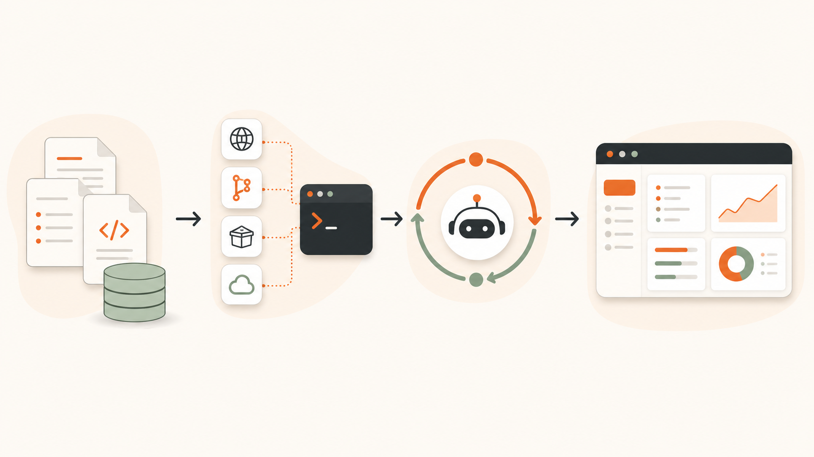

用 Codex 打造
个人 PM 工作台
把本地文件作为知识库，让 Codex 调工具做项目归类、进度摘要和信息聚合，再回到个人工作台确认。
Team Sharing · 2026-05-25
⌕
▦
☰
⌘
Jalen Workbench
1 P0 · 14 signals · 1 milestones · 16 review
Todo
20 open · 8 inbox · 1 focusAI Hot
7 unread · 0 savedSignals
3 shown · 11 hidden第一层是 AI 可读的本地事实源
Markdown 文件管理器
日记、Inbox、项目卡、报告和 Skill 都是普通文件，目录结构就是 Agent 的工作上下文。
文件承担不同职责
临时输入、项目事实、AI 输出和候选内容分开放，Codex 可以搜、读、写、看 diff。
事实源由人维护
AI 写候选和报告，项目事实经过确认后进入项目卡。
- [ ] #task follow owner
meeting note: UAT riskstatus: prd
progress: sample ready
next: align ownerbrief -> candidate
review -> human confirmsource map第二层工具：MCP、CLI、Skill 让 Codex 能行动

srctoolagentuichain每个 AI 动作都要说清：读什么、跑什么、写哪里
action pathCodex 把作业链收束成 Workbench 操作面
⌕
▦
☰
⌘
Jalen Workbench
1 P0 · 14 signals · 1 milestones · 16 review
Todo
20 open · 8 inbox · 1 focusAI Hot
7 unread · 0 savedSignals
3 shown · 11 hidden五个入口承接五类确认
Todo 处理输入，Signals 看外部变化，Projects 校正事实，Review 看候选，System 跑工具。
顶部展示当前工作状态
Header 直接显示 P0、signals、milestones 和 review 数量，帮助决定先处理什么。
结果回到本地文件
所有动作最终指向 Inbox、Projects、Reports 或候选文件，方便复查和继续加工。
Today 把输入、焦点和信号放在同一个决策面
⌕
▦
☰
⌘
Jalen Workbench
1 P0 · 14 signals · 1 milestones · 16 review
Todo
20 open · 8 inbox · 1 focusAI Hot
7 unread · 0 savedSignals
3 shown · 11 hiddencapturefocusdecideSignals 把外部变化压缩成本地响应队列
briefdigestsignal⌕
▦
☰
⌘
Jalen Workbench
1 P0 · 14 signals · 1 milestones · 16 review
Signals
what changed outside TodoAI Hot
7 unread · 0 saved收藏外部信号
收藏点击收藏后，Workbench 调用 `favoriteAiHot(item)`，把网页摘要写入本地素材文件。
Projects 把项目事实卡变成可校正对象
⌕
▦
☰
⌘
Jalen Workbench
1 P0 · 14 signals · 1 milestones · 16 review
Projects
active project controlprogress: PRD sample ready; timeline: UAT 2026-06-08
progress: sample pipeline ready
项目状态/归档
保存状态factcommandreuseReview / System 把 Skill 和工具接到工作台
⌕
▦
☰
⌘
Jalen Workbench
1 P0 · 14 signals · 1 milestones · 16 review
Review
task routingSystem
toolsCalendar Brief
读取 Calendar connector，写本地报告。
Reports/Calendar Brief.mdTask Routing
读 Inbox / Daily，输出归属候选。
Projects/任务归属候选.mdProject Review
读项目卡，输出进度摘要。
Reports/Project Review.mdcandidatebindoperateWorkbench 按钮把 source、tool 和 output 串起来
按钮先明确读什么
任务、日程、邮件、AI Hot、项目卡都对应前面定义好的资料源。
再明确调用什么
MCP 读外部系统，CLI 跑本地脚本，Skill 记录执行口径。
最后明确写哪里
输出回到 Reports、Candidates 或 Projects，PM 决定是否写回事实源。
readrundraftwritedecide这套 Codex 作业链可以复制到每个人自己的 PM 工具
DIY PM tool把 Codex 用法沉淀成工作方式
Workbench 是 Codex 跑通这套作业链后的一个样例：资料源清楚、工具入口清楚、输出位置清楚、确认边界清楚。
contexttoolssurface